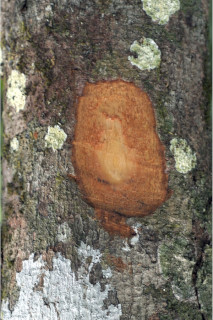
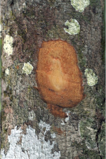
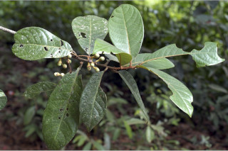
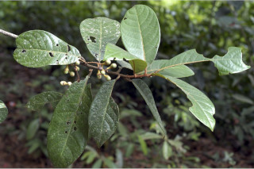
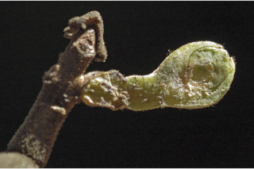
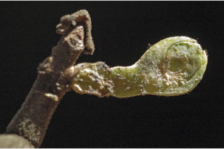

Trees up to 10 m tall.
10 ಮೀ.ವರೆವಿಗೆ ಬೆಳೆಯುವ ಮರಗಳು.
10 മീറ്റര് വരെ ഉയരമുളള മരങ്ങള്
மரங்கள் 10 மீ. உயரம் வரை வளரக்கூடியது.
Bark smooth, lenticellate; blaze orange.
ತೊಗಟೆ ನಯವಾಗಿದ್ದು ವಾಯುವಿನಿಮಯ ಬೆಂಡು ರಂಧ್ರಗಳನ್ನು ಹೊಂದಿರುತ್ತವೆ;ಕಚ್ಚು ಮಾಡಿದ ಜಾಗ ಕಿತ್ತಳೆ ಬಣ್ಣದಲ್ಲಿರುತ್ತದೆ.
ശ്വസനരന്ധ്രങ്ങളുളള, മിനുസമായ പുറംതൊലി; വെട്ട്പാടിന് ഓറഞ്ച് നിറം.
மரத்தின் பட்டை வழுவழுப்பானது, லெண்டிசெல் கொண்டது; உள்பட்டை ஆரஞ்சு நிறமானது.
Branchlets stout, densely rusty tomentose
ಕಿರುಕೊಂಬೆಗಳು ದೃಢವಾಗಿದ್ದು ದಟ್ಟವಾದ ತುಕ್ಕು ವರ್ಣದ ರೋಮಗಳಿಂದ ಕೂಡಿರುತ್ತದೆ.
കനത്തില് തുരുമ്പന് രോമിലമായ, ദൃഢമായ ഉപശാഖകള്.
சிறிய நுனிக்கிளைகள் தடித்தவை, அடர்த்தியாக துரு போன்ற உரோமங்களுடையவை.
Leaves simple, alternate, spiral; petiole 0.4-2 cm long, densely rusty tomentose, planoconvex in cross section; lamina 6-25 x 3-9 cm, with variable shape, elliptic to elliptic-obovate, apex obtuse to acute or acuminate, base acute, margin entire or slightly revolute, coriaceous, glaucous beneath, drying green above, brown beneath, sparsely hairy in intercostals, glabrous above except midrib tomentose near base; secondary_nerves 8-15 pairs, impressed above, strong beneath, usually gradually curved; tertiary_nerves distantly percurrent, strong.
ಎಲೆಗಳು ಸರಳವಾಗಿದ್ದು ಪರ್ಯಾಯ ಮತ್ತು ಸುತ್ತು ಜೋಡನಾ ವ್ಯವಸ್ಥೆಯಲ್ಲಿ -ರುತ್ತವೆ; ತೊಟ್ಟುಗಳು 0.4-2 ಸೆಂ.ಮೀ. ಉದ್ದವಿದ್ದು ತುಕ್ಕು ವರ್ಣದ ದಟ್ಟ ಮೃದು ತುಪ್ಪಳದಿಂದ ಕೂಡಿರುತ್ತದೆ ಮತ್ತು ಮತ್ತು ಅಡ್ಡ ಸೀಳಿದಾಗ ಸಪಾಟ ಪೀನಮಧ್ಯ ಆಕಾರದಲ್ಲಿರುತ್ತವೆ ; ಪತ್ರಗಳು 6-25 X3-9 ಸೆಂ.ಮೀ.ವರೆಗಿನ ಗಾತ್ರ ಹೊಂದಿದ್ದು ಆಕಾರದಲ್ಲಿ ವೈವಿಧ್ಯತೆ ಹೊಂದಿರುತ್ತವೆ; ಅಂಡವೃತ್ತದಿಂದ ಅಂಡವೃತ್ತ-ಬುಗುರಿವರೆಗಿನ ಆಕಾರ ಹೊಂದಿರುತ್ತವೆ ;ತುದಿ ಚೂಪಲ್ಲದುದರಿಂದ ಚೂಪು ಅಥವಾ ಕ್ರಮೇಣ ಚೂಪಾಗುವ ಮಾದರಿಯವರೆಗೆ ಇರುತ್ತವೆ ಮತ್ತು ಚೂಪಾದ ಬುಡವನ್ನು ಹೊಂದಿರುತ್ತವೆ;ಅಂಚು ನಯವಾಗಿರುತ್ತದೆ ಅಥವಾ ಕೊಂಚ ಹಿಂಸುರುಳಿಯನ್ನು ಹೊಂದಿರುತ್ತದೆ ; ಮೇಲ್ಮೈ ತೊಗಲನ್ನೋಲುವ ಮಾದರಿಯಲ್ಲಿರುತ್ತದೆ;ಪತ್ರದ ತಳಭಾಗ ಮಾಸಲು ಬೂದು ಹಸಿರು ಬಣ್ಣ ಹೊಂದಿರುತ್ತದೆ;ಪತ್ರಗಳು ಒಣಗಿದಾಗ ಮೇಲ್ಭಾಗ ಹಸಿರಾಗಿಯೂ ತಳಬಾಗ ಕಂದು ಬಣ್ಣದಲ್ಲಿಯೂ ಇರುತ್ತವೆ; ನಡುವಿನ ನಾಳಗಳು ವಿರಳವಾಗಿ ರೋಮಸಹಿತವಾಗಿರುತ್ತವೆ; ಪತ್ರಗಳು ಬುಡದ ಬಳಿಯಲ್ಲಿ ಮಧ್ಯನಾಳ ದಟ್ಟ ಮೃದು ತುಪ್ಪಳವನ್ನು ಹೊಂದಿರುವುದನ್ನು ಬಿಟ್ಟರೆ ಮೇಲ್ಭಾಗ ರೋಮರಹಿತ -ವಾಗಿರುತ್ತವೆ;ಎರಡನೇ ದರ್ಜೆಯ ನಾಳಗಳು 8-15 ಜೋಡಿಗಳಿದ್ದು ಮೇಲ್ಭಾಗದಲ್ಲಿ ಅಚ್ಚೊತ್ತಿದಂತಿರುತ್ತವೆ ಮತ್ತು ತಳಬಾಗದಲ್ಲಿ ದೃಢವಾಗಿರುತ್ತವೆ ಹಾಗೂ ಸಾಮಾನ್ಯವಾಗಿ ಬಾಗಿರುತ್ತವೆ; ಮೂರನೇ ದರ್ಜೆಯ ನಾಳಗಳು ಹೆಚ್ಚಿನ ಅಂತರ ಹೊಂದಿದ್ದು ಎಲೆ ದಿಂಡಿಗೆ ಅಡ್ಡವಾಗಿ ಕೂಡುತ್ತವೆ ಹಾಗೂ ದೃಢವಾಗಿರುತ್ತವೆ.
ലഘുവായ ഇലകള്, ഏകാന്തരക്രമത്തില്, സര്പ്പിളമായി അടുക്കിയതാണ്; ഛേദത്തില് ഒരുഭാഗം പരന്നും മറുഭാഗം ഉരുണ്ടുമിരിക്കുന്ന ഘടനയുളള ഇലഞെട്ടിന് 0.4 സെ.മീ തൊട്ട് 2 സെ.മീ വരെ നീളം; പത്രഫലകത്തിന് 6 സെ.മീ തൊട്ട് 25 സെ.മീ വരെ നീളവും 3 സെ.മീ മുതല് 9 സെ.മീ വരെ വീതിയും, ആകൃതി ദീര്ഘവൃത്തംതൊട്ട് ദീര്ഘവൃത്തീയ - അപഅണ്ഡാകാരം തൊട്ട് നിശിതമോ ദീര്ഘാഗ്രമോ ആണ്, പത്രാധാരം നിശിതമാണ്, അരികുകള് അവിഭജിതമോ ലഘുവായി പിന്നാക്കം വളഞ്ഞതോ ആണ്, ചര്മ്മില പ്രകൃതം, കീഴെ നീലരാശിയുളളതാണ്, ഉണങ്ങുമ്പോള് മുകള്ഭാഗം പച്ചനിറത്തിലാണ്, കീഴ്ഭാഗം തവിട്ട് നിറത്തിലുമാണ്, സിരകള്ക്കിടയിലുളള ലഘൂവായി രോമിലമാമ്, മുകളില് മുഖ്യസിരയൊഴികെ അരോമിലമാണ്, പത്രാധാരത്തിനടുത്ത് കനത്തില് രോമിലമാമ്; 8 മുതല് 15 വരെ ജോഡി ദ്വിതീയ ഞരമ്പുകള്, മുകളില് മുദ്രിതമാണ്, കീഴെ ദൃഢമാണ്, സാധാരണയായി സാവധാനം വളഞ്ഞതാണ്; ദൃഢമായ ത്രിതീയ ഞരമ്പുകള്, വിദൂരപെര്കറന്റ് വിധത്തിലാണ്.
இலைகள் தனித்தவை, மாற்றுஅடுக்கமானவை, சுழல் போன்று அமைந்தவை; இலைக்காம்பு 0.4-2 செ.மீ., நீளமானது, அடர்த்தியாக துரு போன்ற உரோமங்களுடையவை, குறுக்குவெட்டுத் தோற்றத்தில் பிளேனோகான்வக்ஸ்; இலை அலகு 6-25 X 3-9 செ.மீ., அலகின் வடிவம் மாறுபாடுகள் நிறைந்தது, நீள்வட்டம் முதல் நீள்வட்டம்-தலைகீழ் முட்டை வடிவானது, அலகின் நுனி மழுங்கியவை முதல் கூரியது அல்லது அதிக்கூரியது, அலகின் தளம் கூரியது, அலகின் விளிம்பு முழுமையானது அல்லது பின்புறம் வளைந்து (ரெவலுட்) காணப்படும், கோரியேசியஸ், அலகின் கீழ்பரப்பு மெழுகு பூசியது போன்றது அல்லது சாம்பல் கலந்த நீல நிறமானது (க்களாக்கஸ்), உலரும் போது அலகின் மேற்பரப்பு பச்சை நிறத்தில் காணப்படுபவை, கீழ்பரப்பு ப்ரவுன் நிறமடைகிறது, கீழ்பரப்பில் ஆங்காங்கே உரோமங்களுடையது, மேற்பரப்பு உரோமங்களற்றது ஆனால் மையநரம்பு தளத்தில் மட்டுமே உரோமங்களுடையது; இரண்டாம் நிலை நரம்புகள் 8-15 ஜோடிகள், மேற்பரப்பில் அலகின் பரப்பைவிட பள்ளமானது, கீழ்பரப்பில் தடித்தவை, பொதுவாக சீராக வளைந்தது; மூன்றாம் நிலை நரம்புகள் அகன்ற பெர்க்கரண்ட், தெளிவானவை.
Inflorescence umbels in racemes, rusty tomentose.
ಪೀಠಛತ್ರ ಪುಷ್ಪಮಂಜರಿಗಳು ಮಧ್ಯಾಭಿಸರ ಮಾದರಿಯಲ್ಲಿರುತ್ತವೆ ಮತ್ತು ತುಕ್ಕು ಬಣ್ಣದ ದಟ್ಟ ಮೃದು ತುಪ್ಪಳದಿಂದ ಕೂಡಿರುತ್ತವೆ.
തുരുമ്പന് രോമിലമായ ഛത്രമഞ്ജരി പൂങ്കുലകള് റസീമുകളിലുണ്ടാകുന്നു.
மஞ்சரி அம்பல் வகை ரெசீம் போன்று அமைந்தவை, துரு போன்ற உரோமங்களுடையவை.
Berry, ovoid, seated on cup shaped fruiting_perianth; seed 1.
ಬೆರ್ರಿ ಅಂಡಾಕಾರದಲ್ಲಿದ್ದು ಪುಷ್ಪಾವರಣದ ಬಟ್ಟಲಿನ ಮೇಲೆ ಆಸೀನವಾಗಿರುತ್ತದೆ ಮತ್ತು ಒಂದು ಬೀಜವನ್ನು ಒಳಗೊಂಡಿರುತ್ತದೆ.
ഒറ്റവിത്തുളള കായ, പരിദളക്കപ്പിനകത്തിരിക്കുന്ന, അണ്ഡാകാരബെറിയാണ്.
முழுச்சதைகனி (பெர்ரி), முட்டை வடிவானது, கோப்பை போன்ற ப்பீரியான்ந்தின் மேல் அமர்ந்தவை; விதை ஒன்றுடையது.

 



 

 
